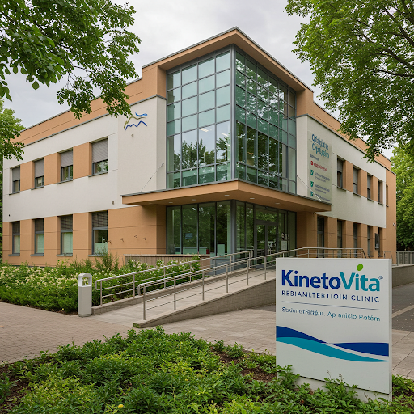

Povestea Noastră
KinetoVita a fost înființată în 2010 cu scopul de a oferi servicii de kinetoterapie și recuperare de înaltă calitate. De-a lungul anilor, am crescut și ne-am dezvoltat, dar misiunea noastră a rămas aceeași: să ajutăm pacienții să-și recapete mobilitatea și calitatea vieții.
Clinicile noastre sunt echipate cu aparatură modernă, iar echipa noastră de terapeuți este în continuă formare pentru a oferi cele mai eficiente metode de tratament.
